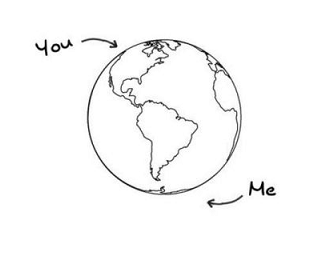
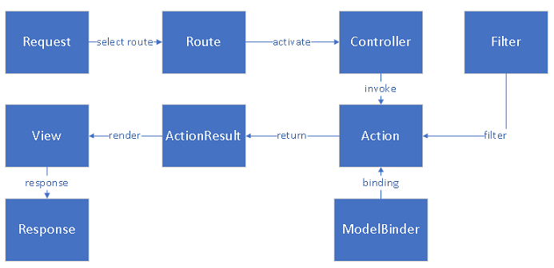
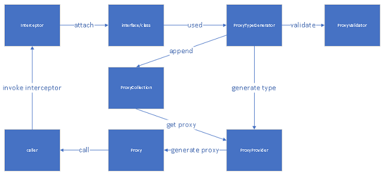
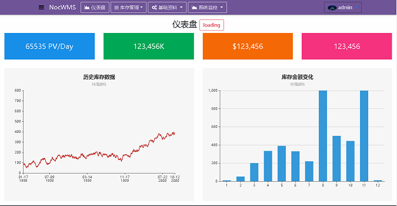
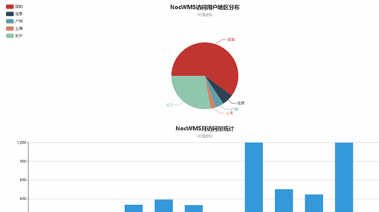
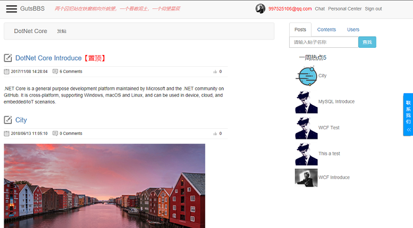
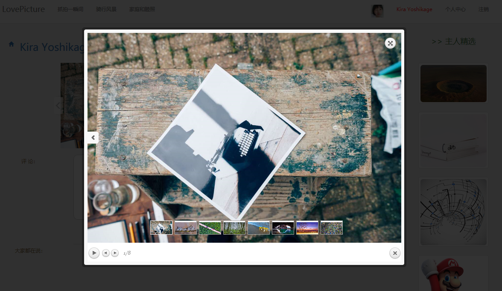
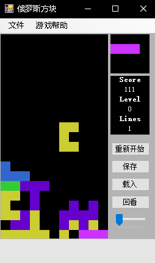

-
- Basic info. 基本信息
- 个人信息: 张自强
- 性别: 男
- 毕业院校: 成都工业学院
- 学历: 本科
- 工作年限: 应届生
- 常用ID: KiraYoshikage、zzq424
- GitHub: www.github.com/zzq424
- 崇拜的人: Anders Hejlsberg
-
- Experience. 项目与工作经验
 在校生，未有公司工作经历
- 暂无
个人项目
-
GustMVC 源代码 Demo
基于.NET Standard开发的跨平台MVC框架，具有ASP.NET.MVC的大部分功能，支持服务器视图渲染以及Web API。
使用技术：
Razor、NVelocity、Roslyn动态编译、WebSocket
 -
AspectFlare 源代码 Demo
KiraNet.AspectFlare是一个轻量级的AOP解决方案，使用Emit技术进行动态代理，可轻松的集成依赖注入。目前还只支持Microsoft.Extensions.DependencyInjection。在运行时通过Emit技术生成动态程序集和动态代理类型从而对目标方法进行拦截。
支持类和接口代理。
使用技术:
动态代理、Emit、Dependency Injection
 -
NocWMS 源代码
NocWMS是一套基于Web的WMS（仓库管理系统），具有WMS的所有功能
结合了Asp.Net Core 和 Angular6, 并使用Identity Server4来实现认证系统
使用技术：
前端：Ajax、Angular6x、TypeScript、Bootstrap-ng、Rxjs
后端：ASP.NET CORE、Identity、Identity Server4、Entity Framework Core、SQL Server、Swagger、AutoMapper、NLog
  -
KiraNet.GutsMVC.BBS 论坛 源代码
KiraNet.GutsMvc.BBS是一个论坛项目，包含基本的浏览、发帖、评论、管理、积分、权限管理、在线聊天、客服机器人（调用图灵机器人接口）等功能。主要使用我自己写的KiraNet.GutsMvc框架来完成
使用Lucene进行搜索，并使用jieba.NET进行中文分词
使用SignalR，实现在线聊天，同时调用图灵机器人，即可实现客服机器人的功能
使用技术：
前端：Ajax、JQuery、Bootstrap
后端：KiraNet.GutsMVC框架、Lucene.Net、jieba.NET、Entity Framework Core、SQL Server、NLog
 -
LovePicture —— 图片分享网站
使用ASP.NET CORE MVC开发，具有浏览、搜索、分享、发图、收藏、评论、积分、权限管理等功能
使用技术：
前端：Ajax、JQuery、Bootstrap
后端：ASP.NET CORE MVC、Entity Framework Core、SQL Server
 -
Tetris
Tetris，即俄罗斯方块。这是我初学编程时写的小游戏，使用WinForm开发
除基本的方块之外，另增加了8种扩展的方块，当积分达到一定后，会自动加速。同时具有保存游戏进度，加载之前游戏数据以及回看游戏等功能
使用技术：WinForm

-
- Skill. 技能清单
前端
-
HTML / CSS
能够编写语义化的 HTML，模块化的 CSS，完成较复杂的布局
能够较为熟练的使用bootstrap制作页面
-
JavaScript
熟悉原生 Javascript，能脱离 jQuery 等类库编码
能运用模块化、面向对象的方式编程
了解TypeScript的编写
熟悉Angular2x+、jQuery的使用
-
其他
了解Gulp 等前端自动化工具
后端
-
C#/.NET
客户端：熟悉WinForm的开发，了解WPF的使用
ASP.NET：熟悉ASP.NET MVC以及WEB API，了解Restful API，熟悉Identity权限管理以及Identity Server4身份认证框架
ORM：熟悉Entity Framework框架，了解Dapper
熟悉设计模式（部分了解）、领域驱动设计模式、Ioc控制反转以及AOP面向切面编程
其它.NET框架及库
Autofac、AutoMapper、Polly、Swagger、Lucene.NET、NLog、WCF等
-
C++
熟悉C++面向对象，以及模板，可利用C++做一些简单的软件
了解Windows API（这是弯路(oﾟvﾟ)ノ）
-
数据库
了解SQL Server以及MySQL，能够独立使用MySQL建立集群
-
操作系统
学习过Linux系统，能够使用命令行解决简单问题
-
其它
对消息队列较为了解，能够使用RabbitMQ完成服务器间通信，或利用RabbitMQ实现事件总线功能
了解Redis的使用
了解Docker，可使用Docker进行基于容器的开发
了解Nginx，可使用Nginx搭建简单站点
熟悉Git，能够使用Git进行代码版本管理
张自强的简历
(ง •_•)ง 努力~
-
- Contact. 联系方式
- 电话: 15888789910
- 邮箱: 997525106@qq.com
- 微信: z997525106
- QQ: 997525106
-
- 应聘岗位
- 后端工程师
我是一个对编程由衷热爱、有趣的工程师。
我目前正在寻找后端工程师岗位的工作机会，希望借此为贵司献上我的一点绵薄之力，快招我到碗里来吧！